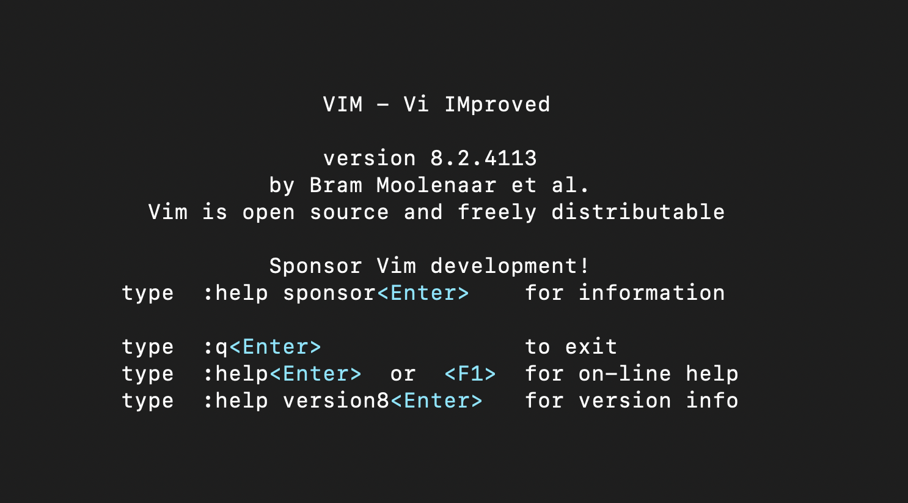
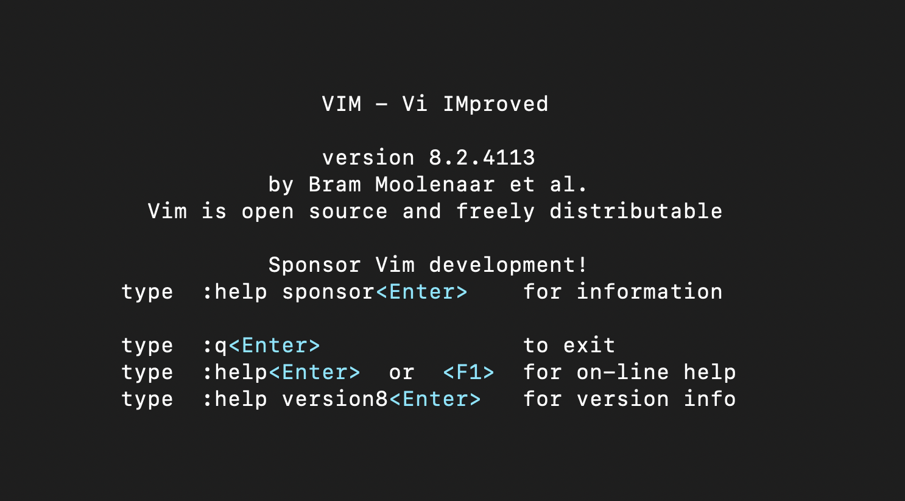

Bram Moolenaar, created vim in 1991
- Modes
- normal
- insert
- visual
- command
- Movements
Movements
- basics (up, down, exit and save, etc)
- intermediate (jump words, selection, deletion)
- advance (markings, splitting)
- .vimrc
- other vim flavors, etc neovim
- other inspirations, resources